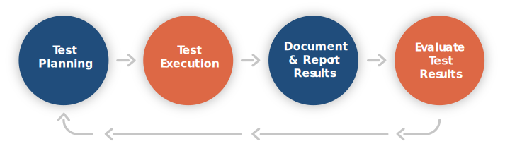

What is User Acceptance Testing
In the software, website, and application development world, nearly every topic can seem complicated and confusing. Thankfully, there is one notable exception: User acceptance testing (UAT) is fairly straightforward. Below, we will explain the who, what, where, why, and when of UAT in 2020.
But first, what is it?
What is user acceptance testing (UAT)?
User acceptance testing is commonly the last phase of testing to complete before that website, software, or application is released to a client or into the market.
What's the goal of User Acceptance Testing?
The goal of UAT is to make sure the software, website or application can handle all required tasks in real-world scenarios, according to user specifications. This type of UAT process is often called beta testing (see more below). The reason this final phase of testing is completed is to be sure that, once released, the software, website or application is free of any defects that would impede users from completing tasks in their day-to-day business operations.
Different Types of UAT?
There are several different types of product tests that qualify as user acceptance testing. Alpha testing, beta testing, black box testing, contract acceptance testing, operational acceptance testing, and regulation acceptance testing.
Alpha Testing
Alpha testing is completed inside the development environment before the website or software is seen by external testers. In this phase of testing, an internal team will review the functionality and workflow of the software. The team then records any found issues and provides additional feedback to the development team.
Beta Testing
Beta testing is completed by groups of end-users or subject matter experts (SME). They will begin using the software or application the way it was designed to function and record any issues they find. They would again provide feedback to developers, so improvements can be made.
Black Box Testing
In black box testing, the software is reviewed with the testers unable to see internal coding structures. During this process, the end-users will complete specific functions with only the knowledge of what the application is supposed to do. Typically, there is little to no guidance about how these functions should be completed.
Contract Acceptance Testing
During contract acceptance testing (CAT), the software or application in development is tested against specific predetermined and well-defined criteria. These specifications are defined during the discovery process, added to the contract, and maybe a part of legal requirements for payment.
Operational Acceptance Testing
Operational acceptance testing (OAT) places a heavy focus on validating the workflows, security, and the operational readiness of the website, mobile app, or software. OAT will validate the website or app performs without error in its standard operating environment (SOE).
Regulation Acceptance Testing
Regulation acceptance testing (RAT) reviews if the software or application meets all governmental, legal, and safety standards within the applicable industry.
When Should You Start User Acceptance Testing?
Testing should not start until the website, software or application being created is close to completion. UAT starts after unit, integration and system testing has been completed finding no major issues and the codebase is fully developed.
So who is testing and how?
Who is involved in testing?
Whenever possible, the most important group to include in UAT should be the end-users of the software, website or application, which may also be called the subject-matter experts (SME). They are the individuals that will be using and interacting with the product on a daily basis. As the most impacted audience once the product rolled out, this daily usage will allow them to find problems that the internal team may not.
Other personas who could participate in UAT could include:
- Product Managers
- Customer Service Representatives
- Paid Beta Testers
- Segmented portion of end-users
When identifying users, It is important to consider that tests should not focus on minor or cosmetic issues, like color schemes, spelling errors or software glitches. These issues must be identified and fixed by developers during earlier testing phases, such as unit testing or integration testing.
Once you identify your UAT team, it’s time to plan and conduct your test:
Planning And Conducting Your Test
As with everything, planning is the key to successful UAT. A well-structured user acceptance testing plan will limit the number of re-tests needed to complete your project and drive down the associated costs of fixing mistakes. Creating a user acceptance testing checklist will help guide your team through each stage of the process. Some of the questions you should ask as part of your UAT checklist are:
- Has the acceptance criteria been defined?
- Is all input data available that is required for testing?
- Has the testing procedure been defined?
- Were all problems documented?
- Were all identified problems resolved?
- What aspects of business functionality need to be tested to gain the approval of clients?
- Who is responsible for which tasks? Who’s doing the strategic planning?
- Who’s managing the logistics?
This checklist can provide a strong quality assurance test of your testing plan. After your checklist is complete, let's move on.
Design the user acceptance test cases
Your tests should be designed around communications received from your end-users or client that started during the discovery phase of your project. Execute tests against these predetermined scenarios that represent how your end-users would interact with the website or software as part of their daily activities. Plan to keep tests broad in nature to allow for the testers to navigate freely to complete tasks.
Stay away from click-by-click test steps, as these do not allow for any variance during the completion of activities and is not a realistic test of end usage. Once your testing is created, you need to make sure you have templates to record test results and internal procedures in place to effectively log the feedback you will receive once testing starts.
Now, let's move on to testing:
Execute Your Test
After your test cases have been accepted, the UAT team can begin completing each task and any additional related test that may need to be completed. Typically, testing happens in a group setting like a conference room (or in a shared virtual environment). All users, the project manager, quality assurance specialists and build team representatives will work closely together over a few days complete designed tasks and work through all the acceptance test cases.
Performance Feedback
After testing is completed, the SME/end users provide feedback to the build team. Feedback typically contains both positive comments and reports of defects, bugs or recommendations to streamline or increase functionalities. The team manager needs to document the end-users findings and begin to triage the bug fixes and requests.
Acceptance testing triage
Once performance feedback has been documented, the build team reviews feedback from either an internal Quality Assurance Specialist or the end-users. The team then triages that feedback and prioritizes it based on its severity level. Triage often includes the client to confirm which feedback, based on different criteria, may need clarification, should be acted on, or should not be acted on and what items should receive the highest priority.
Remember to keep UAT feedback and remediation cycles concise. This will be important as feedback trickles in, which can lead to fragmented remediation and add cost to the project via duplicated work. It’s best to allow a set period of time for the client to provide their UAT feedback, then triage that feedback once it’s all in, and remediate thereafter. The overlap in these steps should be minimal, if any at all.

Ensuring clear and concise UAT cycles is important to the health of the project. Triage plays a critical role in that process and helps to manage expectations and ensure that feedback is addressed. Moreover, it adds value and increases functionality to the overall build. Once the software, website or application is working properly and meets the specifications of your client, it is time to have the project reviewed and signed off by the client.
It's now time to meet with your client:
UAT Sign off meeting
Before moving into production or going "live", you want to make sure there are no critical defects left open and that the software, website or application meets all contractual and business requirements. You are now ready to meet with all client stakeholders to demonstrate completeness against all contracted requirements. Often, there may be legal requirements for acceptance of the system that ties into payment.
Conclusion
There will be many forms of testing that occur in the full lifecycle and development for software, websites, or applications. Including user acceptance testing as one of the tools in the development of projects will reduce the probability of unexpected issues. The full quality assurance process goes hand-in-hand with reducing the amount of required maintenance, driving down overall cost, and increasing client satisfaction.
Important points:
- In regular software development scenarios, UAT is carried out in the QA environment. If there is no staging or UAT environment.
- UAT is more effective when the client is involved in the process.
Bonus Tip, Test Automation Tools
There are a number of tools available on the market used for user acceptance testing. One Of the most popular is:
Selenium
Selenium is an open-source portable framework for testing web applications. Selenium provides a playback tool for authoring functional tests without the need to learn a test scripting language
Please take some time to check out Selenium and let us know if you like the tool. If you prefer another tool, let us know!